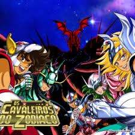
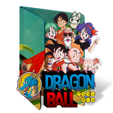
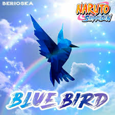

Soundtrack
| Anime | Música | Artisa | Ano | Imagem |
|---|---|---|---|---|
| Dragon Ball GT | Sorriso Resplandecente | Tetsurou Oda / Izumi Sakai | 1996 | .jpg) |
| Os Cvalaeiros Do Zodiaco | Pegasuso Fantasy (Versã brasileira) | Rodrigo Firmo de Freitas / Demien Feldman | 1994 |  |
| Dragon Ball Z | Cha-La Head-Cha-La (versão em português brasileiro) | Tetsurou Oda / Izumi Sakai | 1989 |  |
| Naruto Shippuden | Shihouette | banda Kana-Boon | 2007 | |
| Naruto Shippuden | Blue Bird | TYoshiki Mizuno | 2007 |  |
Dragon Ball GT - Sorriso Resplandecente
AssistirSorriso Resplandecente" é uma música marcante de "Dragon Ball GT" que captura a essência da série, transmitindo uma sensação de esperança e determinação. A letra reflete a luta dos personagens para superar desafios e a importância da amizade e da coragem em momentos difíceis. Com uma melodia envolvente, a canção se torna um símbolo do crescimento e das aventuras dos heróis, ressoando fortemente com os fãs e acrescentando uma camada emocional à narrativa da série.
Dragon Ball - Cha-La Head-Cha-La (versão em português brasileiro)
Assistir"Cha-La Head-Cha-La" é a famosa música de abertura de "Dragon Ball Z," que se tornou um hino entre os fãs. A versão em português transmite energia e celebra a coragem dos guerreiros Z em suas batalhas. Com um ritmo contagiante, a canção cativa tanto novos espectadores quanto aqueles que cresceram com a série, sendo essencial na memória afetiva do universo de Dragon Ball.
Os Cvalaeiros Do Zodiaco - Pergasu Fantasy (versão brasileiro)
Assistir"Pegasus Fantasy" é a famosa música de abertura de "Os Cavaleiros do Zodíaco" que conquistou os fãs com sua melodia poderosa e letras inspiradoras. A versão em português brasileiro mantém a energia épica da original, destacando a coragem dos Cavaleiros em sua luta contra o mal. A canção evoca temas de amizade, heroísmo e sacrifício, ressoando profundamente com o público. Com um ritmo marcante, "Pegasus Fantasy" se tornou um símbolo da série, trazendo nostalgia e empolgação a cada episódio.
Naruto Shippuden - Shihouette
Assistir"Shihouette" é uma das músicas de abertura marcantes de "Naruto Shippuden," conhecida por sua melodia intensa e letras emocionantes. A canção reflete os desafios e a determinação dos personagens, especialmente de Naruto em sua jornada de autodescoberta e superação. Com um ritmo envolvente, "Shihouette" captura a essência das lutas internas e externas que os protagonistas enfrentam, criando uma conexão profunda com os fãs. Sua energia e mensagem ressoam fortemente, tornando-a uma parte memorável da experiência de assistir à série.
Naruto Shippuden - Blue Bird
Assistir"Blue Bird" é uma das aberturas mais icônicas de "Naruto Shippuden," celebrada por sua melodia cativante e letras inspiradoras. A canção simboliza a busca pela liberdade e a superação de obstáculos, refletindo o crescimento dos personagens ao longo da série. Com um ritmo vibrante e uma entrega emocional poderosa, "Blue Bird" captura a esperança e a determinação de Naruto e seus amigos, tornando-se um hino que ressoa com os fãs e acrescentando profundidade às suas jornadas. É uma música que encapsula a essência do anime, lembrando a todos da importância de lutar pelos próprios sonhos.
Dragon Ball GT - Sorriso Resplandecente
Sorriso Resplandecente" é uma música marcante de "Dragon Ball GT" que captura a essência da série, transmitindo uma sensação de esperança e determinação. A letra reflete a luta dos personagens para superar desafios e a importância da amizade e da coragem em momentos difíceis. Com uma melodia envolvente, a canção se torna um símbolo do crescimento e das aventuras dos heróis, ressoando fortemente com os fãs e acrescentando uma camada emocional à narrativa da série.